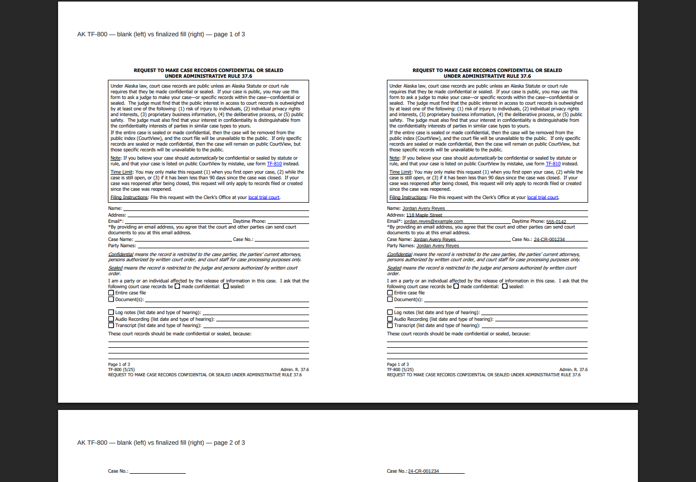
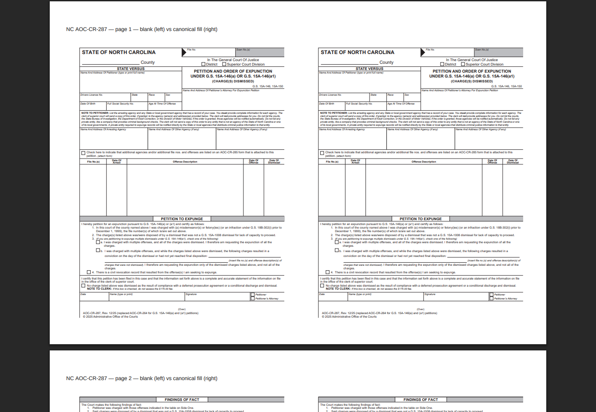

Generated by scripts/generate-rcap-problematic-pdf-master-list.mjs. Every asset below is held; none is approved, public, sellable, packet-ready or ready for checkout.
Problematic PDF audit corrected — source acquisition required before remediation. No new PDF family was corrected here and no official source was acquired. What changed is the inventory's truthfulness, its evidence, its classification and its verification.
Every asset carries exactly one. Release status is a separate axis and is HELD for all of them.
| Disposition | Meaning | Assets |
|---|---|---|
| active_track_delivery_hold | An active track's packet delivery is blocked on this asset. | 1 |
| official_source_required | The verified source binary is unavailable, so nothing downstream can be attempted. | 53 |
| certification_unproven | Artifacts exist but cannot be certified: their active-content cleanliness or finalization cannot be established from the committed bytes. | 25 |
| independent_review_required | Certifiable artifacts exist and no independent review has approved them. | 4 |
| legal_design_hold | A substantive legal-design question is unresolved. | 0 |
| reference_only | An instruction, guidance or supporting-process document, not a filed component. | 2 |
| orphaned | No active track requires it and no candidate binding to one exists. | 2 |
| optional | A packet form no active track currently requires, with a plausible binding. | 0 |
| archive_candidate | Source-gated: retained for provenance, never runtime-selectable. | 0 |
| retire_candidate | Recorded as superseded, withdrawn or repealed; nothing should use it. | 0 |
| platform_ready | The official source is pinned, every field or anchor is classified, the artifacts are finalized, inspectable and visibly filled, and an independent reviewer approved these exact bytes. | 1 |
How many assets carry a finding and how many distinct problems produce them are different questions. A systemic cause clears on every impacted asset at once.
| Root cause | Dimension | Scope | Impacted assets |
|---|---|---|---|
| RC-G-GENERATION-NOT-ALLOWED | governance | systemic | 88 |
| RC-G-NO-INDEPENDENT-TECHNICAL-APPROVAL | governance | systemic | 85 |
| RC-G-PRODUCTION-HOLD | governance | systemic | 88 |
| RC-S-BUNDLE-ABSENT | source | systemic | 39 |
| RC-S-CURRENTNESS-UNVERIFIED | source | systemic | 37 |
| RC-S-STALE-OR-SUPERSEDED | source | family_specific | 5 |
| RC-T-ACTIVE-CONTENT-IN-OUTPUT | technical | family_specific | 23 |
| RC-T-ALL-FIELDS-UNWRITABLE | technical | family_specific | 2 |
| RC-T-DIRTY-ACROFORM-SOURCE | technical | family_specific | 25 |
| RC-T-FACTORY-PROVENANCE | technical | systemic | 1 |
| RC-T-FLAT-GEOMETRY | technical | family_specific | 21 |
| RC-T-NO-DERIVABLE-WRITE-BOX | technical | family_specific | 8 |
| RC-T-NO-FIELD-CENSUS | technical | family_specific | 15 |
| RC-T-OBJECT-STREAMS | technical | systemic | 1 |
| RC-T-UNFLATTENED-FIELDS | technical | systemic | 1 |
| RC-T-VALUES-ABSENT | technical | family_specific | 3 |
| RC-V-NO-SHEET-PRODUCED | visual | systemic | 18 |
| RC-V-SHEET-FROM-UNFINALIZED-SOURCE | visual | systemic | 2 |
| RC-V-SHEET-PANELS-IDENTICAL | visual | systemic | 4 |
| RC-V-UNSAFE-PLACEMENT | visual | family_specific | 27 |
| Priority | Meaning | Assets |
|---|---|---|
| 1 | Active-track source required for an otherwise packet-capable route. | 1 |
| 2 | Active-track source required before technical or visual review can begin. | 41 |
| 3 | Source needed to resolve currentness or supersession for a current participant treatment. | 2 |
| 4 | Orphaned, optional, historical or reference-only. do_not_acquire_without_a_named_current_use. | 43 |
| Lane | Meaning | Assets |
|---|---|---|
| A | actionable technical or visual correction | 0 |
| B | official source acquisition required | 58 |
| C | source currentness hold | 26 |
| D | legal design hold | 0 |
| E | orphaned or optional asset | 4 |
| F | missing binary with complete participant deferral | 0 |
Each image is a real rendering of the committed blank-versus-filled contact sheet, produced through a PDF engine rather than by extracting text. Where the two panels are identical, the sheet shows a reviewer two blank forms and is not evidence of a fill.


A flat official form has no widgets, so every value is placed by measured geometry. Where the document does not express a write box, the anchor capture asserts no coordinate — the correct refusal, since guessing a rectangle on a court filing is how a participant's name lands in a clerk's box. Each mark below is a label's measured position, not a proposed write box. Where the value belongs relative to it is the judgement being asked for.
None.
| Jurisdiction | Form | Disposition | Acq. | Lane | Owner | Exact blocker | Exact next action |
|---|---|---|---|---|---|---|---|
| AK | ak-record-relief-forms.html | official_source_required | 4 | B | Roger (official source acquisition) | The verified binary for AK ak-record-relief-forms.html is not in the clone, and no track binding exists for it: this asset is keyed by filename while the pinned legal-design registry keys packet components by form number, so nothing joins the two and the affected route cannot be stated. No candidate form-number match was found either. | Retrieve the current official AK ak-record-relief-forms.html binary from its issuing body, record its URL, retrieval timestamp, publisher, edition date, byte length and SHA-256, and place it at the path its source record pins. Nothing downstream can proceed without those bytes. Separately, establish which packet component, if any, depends on this asset: no track binding exists and no candidate form-number match was found, so this row cannot currently name the route it affects. |
| AK | RequestToSealCrimInfo.pdf | official_source_required | 4 | B | Roger (official source acquisition) | The verified binary for AK RequestToSealCrimInfo.pdf is not in the clone, and no track binding exists for it: this asset is keyed by filename while the pinned legal-design registry keys packet components by form number, so nothing joins the two and the affected route cannot be stated. No candidate form-number match was found either. | Retrieve the current official AK RequestToSealCrimInfo.pdf binary from its issuing body, record its URL, retrieval timestamp, publisher, edition date, byte length and SHA-256, and place it at the path its source record pins. Nothing downstream can proceed without those bytes. Separately, establish which packet component, if any, depends on this asset: no track binding exists and no candidate form-number match was found, so this row cannot currently name the route it affects. |
| AK | TF-800 | certification_unproven | 2 | C | Source-currentness reviewer | Revision REV-2025-05 cannot be shown to be the currently published edition: freshness is recorded as candidate_current_source and no independent currentness review exists. | Confirm against the issuing body's own publication whether revision REV-2025-05 of AK TF-800 is the currently published edition, and record the comparison and the superseded identity if it is not. |
| AK | TF-805 | certification_unproven | 2 | C | Source-currentness reviewer | Revision REV-2025-05 cannot be shown to be the currently published edition: freshness is recorded as candidate_current_source and no independent currentness review exists. | Confirm against the issuing body's own publication whether revision REV-2025-05 of AK TF-805 is the currently published edition, and record the comparison and the superseded identity if it is not. |
| AK | TF-810 | certification_unproven | 2 | C | Source-currentness reviewer | Revision REV-2025-05 cannot be shown to be the currently published edition: freshness is recorded as candidate_current_source and no independent currentness review exists. | Confirm against the issuing body's own publication whether revision REV-2025-05 of AK TF-810 is the currently published edition, and record the comparison and the superseded identity if it is not. |
| AL | al-expungement-petition.html | official_source_required | 4 | B | Roger (official source acquisition) | The verified binary for AL al-expungement-petition.html is not in the clone, and no track binding exists for it: this asset is keyed by filename while the pinned legal-design registry keys packet components by form number, so nothing joins the two and the affected route cannot be stated. No candidate form-number match was found either. | Retrieve the current official AL al-expungement-petition.html binary from its issuing body, record its URL, retrieval timestamp, publisher, edition date, byte length and SHA-256, and place it at the path its source record pins. Nothing downstream can proceed without those bytes. Separately, establish which packet component, if any, depends on this asset: no track binding exists and no candidate form-number match was found, so this row cannot currently name the route it affects. |
| AL | cr-65-expunge-petition-10-2024.pdf | official_source_required | 4 | B | Roger (official source acquisition) | The verified binary for AL cr-65-expunge-petition-10-2024.pdf is not in the clone, and no track binding exists for it: this asset is keyed by filename while the pinned legal-design registry keys packet components by form number, so nothing joins the two and the affected route cannot be stated. A candidate, unconfirmed, form-number match is AL CR-65 (tracks al-diversion, al-felony-dwop, al-felony-nonconviction-90, al-misd-conviction, al-misd-dwop, al-misd-nonconviction-90, al-pardoned-felony, al-trafficking). | Retrieve the current official AL cr-65-expunge-petition-10-2024.pdf binary from its issuing body, record its URL, retrieval timestamp, publisher, edition date, byte length and SHA-256, and place it at the path its source record pins. Nothing downstream can proceed without those bytes. Separately, confirm or reject the candidate form-number binding to AL CR-65 so this row can name the route it affects. |
| AL | cr-65a-order-on-petition-for-expungement-10-2024.pdf | official_source_required | 4 | B | Roger (official source acquisition) | The verified binary for AL cr-65a-order-on-petition-for-expungement-10-2024.pdf is not in the clone, and no track binding exists for it: this asset is keyed by filename while the pinned legal-design registry keys packet components by form number, so nothing joins the two and the affected route cannot be stated. No candidate form-number match was found either. | Retrieve the current official AL cr-65a-order-on-petition-for-expungement-10-2024.pdf binary from its issuing body, record its URL, retrieval timestamp, publisher, edition date, byte length and SHA-256, and place it at the path its source record pins. Nothing downstream can proceed without those bytes. Separately, establish which packet component, if any, depends on this asset: no track binding exists and no candidate form-number match was found, so this row cannot currently name the route it affects. |
| AL | criminal-forms.html | official_source_required | 4 | B | Roger (official source acquisition) | The verified binary for AL criminal-forms.html is not in the clone, and no track binding exists for it: this asset is keyed by filename while the pinned legal-design registry keys packet components by form number, so nothing joins the two and the affected route cannot be stated. No candidate form-number match was found either. | Retrieve the current official AL criminal-forms.html binary from its issuing body, record its URL, retrieval timestamp, publisher, edition date, byte length and SHA-256, and place it at the path its source record pins. Nothing downstream can proceed without those bytes. Separately, establish which packet component, if any, depends on this asset: no track binding exists and no candidate form-number match was found, so this row cannot currently name the route it affects. |
| AL | criminal-record-expungement.html | official_source_required | 4 | B | Roger (official source acquisition) | The verified binary for AL criminal-record-expungement.html is not in the clone, and no track binding exists for it: this asset is keyed by filename while the pinned legal-design registry keys packet components by form number, so nothing joins the two and the affected route cannot be stated. No candidate form-number match was found either. | Retrieve the current official AL criminal-record-expungement.html binary from its issuing body, record its URL, retrieval timestamp, publisher, edition date, byte length and SHA-256, and place it at the path its source record pins. Nothing downstream can proceed without those bytes. Separately, establish which packet component, if any, depends on this asset: no track binding exists and no candidate form-number match was found, so this row cannot currently name the route it affects. |
| AR | 3-Misdemeanor-Petition-8_01_2023.pdf | official_source_required | 4 | B | Roger (official source acquisition) | The verified binary for AR 3-Misdemeanor-Petition-8_01_2023.pdf is not in the clone, and no track binding exists for it: this asset is keyed by filename while the pinned legal-design registry keys packet components by form number, so nothing joins the two and the affected route cannot be stated. No candidate form-number match was found either. | Retrieve the current official AR 3-Misdemeanor-Petition-8_01_2023.pdf binary from its issuing body, record its URL, retrieval timestamp, publisher, edition date, byte length and SHA-256, and place it at the path its source record pins. Nothing downstream can proceed without those bytes. Separately, establish which packet component, if any, depends on this asset: no track binding exists and no candidate form-number match was found, so this row cannot currently name the route it affects. |
| AR | 7_Nolle_Prosequi_Dismissed_Acquittal_Petition_2020_F.pdf | official_source_required | 4 | B | Roger (official source acquisition) | The verified binary for AR 7_Nolle_Prosequi_Dismissed_Acquittal_Petition_2020_F.pdf is not in the clone, and no track binding exists for it: this asset is keyed by filename while the pinned legal-design registry keys packet components by form number, so nothing joins the two and the affected route cannot be stated. No candidate form-number match was found either. | Retrieve the current official AR 7_Nolle_Prosequi_Dismissed_Acquittal_Petition_2020_F.pdf binary from its issuing body, record its URL, retrieval timestamp, publisher, edition date, byte length and SHA-256, and place it at the path its source record pins. Nothing downstream can proceed without those bytes. Separately, establish which packet component, if any, depends on this asset: no track binding exists and no candidate form-number match was found, so this row cannot currently name the route it affects. |
| AR | Arkansas-Petition-Order-Forms.html | official_source_required | 4 | B | Roger (official source acquisition) | The verified binary for AR Arkansas-Petition-Order-Forms.html is not in the clone, and no track binding exists for it: this asset is keyed by filename while the pinned legal-design registry keys packet components by form number, so nothing joins the two and the affected route cannot be stated. No candidate form-number match was found either. | Retrieve the current official AR Arkansas-Petition-Order-Forms.html binary from its issuing body, record its URL, retrieval timestamp, publisher, edition date, byte length and SHA-256, and place it at the path its source record pins. Nothing downstream can proceed without those bytes. Separately, establish which packet component, if any, depends on this asset: no track binding exists and no candidate form-number match was found, so this row cannot currently name the route it affects. |
| AR | Felony-Petition-Form-f.pdf | official_source_required | 4 | B | Roger (official source acquisition) | The verified binary for AR Felony-Petition-Form-f.pdf is not in the clone, and no track binding exists for it: this asset is keyed by filename while the pinned legal-design registry keys packet components by form number, so nothing joins the two and the affected route cannot be stated. No candidate form-number match was found either. | Retrieve the current official AR Felony-Petition-Form-f.pdf binary from its issuing body, record its URL, retrieval timestamp, publisher, edition date, byte length and SHA-256, and place it at the path its source record pins. Nothing downstream can proceed without those bytes. Separately, establish which packet component, if any, depends on this asset: no track binding exists and no candidate form-number match was found, so this row cannot currently name the route it affects. |
| KY | 496.2.pdf | official_source_required | 4 | B | Roger (official source acquisition) | The verified binary for KY 496.2.pdf is not in the clone, and no track binding exists for it: this asset is keyed by filename while the pinned legal-design registry keys packet components by form number, so nothing joins the two and the affected route cannot be stated. No candidate form-number match was found either. | Retrieve the current official KY 496.2.pdf binary from its issuing body, record its URL, retrieval timestamp, publisher, edition date, byte length and SHA-256, and place it at the path its source record pins. Nothing downstream can proceed without those bytes. Separately, establish which packet component, if any, depends on this asset: no track binding exists and no candidate form-number match was found, so this row cannot currently name the route it affects. |
| KY | 496.3.pdf | official_source_required | 4 | B | Roger (official source acquisition) | The verified binary for KY 496.3.pdf is not in the clone, and no track binding exists for it: this asset is keyed by filename while the pinned legal-design registry keys packet components by form number, so nothing joins the two and the affected route cannot be stated. No candidate form-number match was found either. | Retrieve the current official KY 496.3.pdf binary from its issuing body, record its URL, retrieval timestamp, publisher, edition date, byte length and SHA-256, and place it at the path its source record pins. Nothing downstream can proceed without those bytes. Separately, establish which packet component, if any, depends on this asset: no track binding exists and no candidate form-number match was found, so this row cannot currently name the route it affects. |
| KY | 497.2.pdf | official_source_required | 4 | B | Roger (official source acquisition) | The verified binary for KY 497.2.pdf is not in the clone, and no track binding exists for it: this asset is keyed by filename while the pinned legal-design registry keys packet components by form number, so nothing joins the two and the affected route cannot be stated. No candidate form-number match was found either. | Retrieve the current official KY 497.2.pdf binary from its issuing body, record its URL, retrieval timestamp, publisher, edition date, byte length and SHA-256, and place it at the path its source record pins. Nothing downstream can proceed without those bytes. Separately, establish which packet component, if any, depends on this asset: no track binding exists and no candidate form-number match was found, so this row cannot currently name the route it affects. |
| KY | AOC-334 | active_track_delivery_hold | 1 | C | Source-currentness reviewer | Revision REV-UNKNOWN cannot be shown to be the currently published edition: freshness is recorded as revision_confirmation_required and no independent currentness review exists. | Confirm against the issuing body's own publication whether revision REV-UNKNOWN of KY AOC-334 is the currently published edition, and record the comparison and the superseded identity if it is not. |
| KY | AOC-496 | certification_unproven | 2 | C | Source-currentness reviewer | Revision REV-2016-07 cannot be shown to be the currently published edition: freshness is recorded as candidate_current_source and no independent currentness review exists. | Confirm against the issuing body's own publication whether revision REV-2016-07 of KY AOC-496 is the currently published edition, and record the comparison and the superseded identity if it is not. |
| KY | AOC-496.2 | certification_unproven | 2 | C | Source-currentness reviewer | Revision REV-2016-07 cannot be shown to be the currently published edition: freshness is recorded as candidate_current_source and no independent currentness review exists. | Confirm against the issuing body's own publication whether revision REV-2016-07 of KY AOC-496.2 is the currently published edition, and record the comparison and the superseded identity if it is not. |
| KY | AOC-496.3 | certification_unproven | 3 | C | Source-currentness reviewer | Revision REV-UNKNOWN cannot be shown to be the currently published edition: freshness is recorded as revision_confirmation_required and no independent currentness review exists. | Confirm against the issuing body's own publication whether revision REV-UNKNOWN of KY AOC-496.3 is the currently published edition, and record the comparison and the superseded identity if it is not. |
| KY | AOC-496.4 | certification_unproven | 2 | C | Source-currentness reviewer | Revision REV-2023-06 cannot be shown to be the currently published edition: freshness is recorded as candidate_current_source and no independent currentness review exists. | Confirm against the issuing body's own publication whether revision REV-2023-06 of KY AOC-496.4 is the currently published edition, and record the comparison and the superseded identity if it is not. |
| KY | AOC-497 | certification_unproven | 2 | C | Source-currentness reviewer | Revision REV-UNKNOWN cannot be shown to be the currently published edition: freshness is recorded as revision_confirmation_required and no independent currentness review exists. | Confirm against the issuing body's own publication whether revision REV-UNKNOWN of KY AOC-497 is the currently published edition, and record the comparison and the superseded identity if it is not. |
| KY | JV-29.1.pdf | official_source_required | 4 | B | Roger (official source acquisition) | The verified binary for KY JV-29.1.pdf is not in the clone, and no track binding exists for it: this asset is keyed by filename while the pinned legal-design registry keys packet components by form number, so nothing joins the two and the affected route cannot be stated. No candidate form-number match was found either. | Retrieve the current official KY JV-29.1.pdf binary from its issuing body, record its URL, retrieval timestamp, publisher, edition date, byte length and SHA-256, and place it at the path its source record pins. Nothing downstream can proceed without those bytes. Separately, establish which packet component, if any, depends on this asset: no track binding exists and no candidate form-number match was found, so this row cannot currently name the route it affects. |
| KY | JV-29.pdf | official_source_required | 4 | B | Roger (official source acquisition) | The verified binary for KY JV-29.pdf is not in the clone, and no track binding exists for it: this asset is keyed by filename while the pinned legal-design registry keys packet components by form number, so nothing joins the two and the affected route cannot be stated. No candidate form-number match was found either. | Retrieve the current official KY JV-29.pdf binary from its issuing body, record its URL, retrieval timestamp, publisher, edition date, byte length and SHA-256, and place it at the path its source record pins. Nothing downstream can proceed without those bytes. Separately, establish which packet component, if any, depends on this asset: no track binding exists and no candidate form-number match was found, so this row cannot currently name the route it affects. |
| KY | JV-30.pdf | official_source_required | 4 | B | Roger (official source acquisition) | The verified binary for KY JV-30.pdf is not in the clone, and no track binding exists for it: this asset is keyed by filename while the pinned legal-design registry keys packet components by form number, so nothing joins the two and the affected route cannot be stated. No candidate form-number match was found either. | Retrieve the current official KY JV-30.pdf binary from its issuing body, record its URL, retrieval timestamp, publisher, edition date, byte length and SHA-256, and place it at the path its source record pins. Nothing downstream can proceed without those bytes. Separately, establish which packet component, if any, depends on this asset: no track binding exists and no candidate form-number match was found, so this row cannot currently name the route it affects. |
| KY | Kentucky-Expungement-Forms.html | official_source_required | 4 | B | Roger (official source acquisition) | The verified binary for KY Kentucky-Expungement-Forms.html is not in the clone, and no track binding exists for it: this asset is keyed by filename while the pinned legal-design registry keys packet components by form number, so nothing joins the two and the affected route cannot be stated. No candidate form-number match was found either. | Retrieve the current official KY Kentucky-Expungement-Forms.html binary from its issuing body, record its URL, retrieval timestamp, publisher, edition date, byte length and SHA-256, and place it at the path its source record pins. Nothing downstream can proceed without those bytes. Separately, establish which packet component, if any, depends on this asset: no track binding exists and no candidate form-number match was found, so this row cannot currently name the route it affects. |
| NC | AOC-CR-287 | official_source_required | 2 | B | Roger (official source acquisition) | Correcting this asset requires re-rendering it through the current official-form factory, and the verified source binary (SHA-256 2294223f9157d78d3ad756e50befff6c2d6fa08dff96214d751e5229cfd2460f) is not present in this clone. The factory renders from the binary; there is nothing to render from. | Retrieve the current official NC AOC-CR-287 binary from its issuing body, record its URL, retrieval timestamp, publisher, edition date, byte length and SHA-256, and place it at the path its source record pins. Nothing downstream can proceed without those bytes. |
| NC | AOC-CR-287 | official_source_required | 2 | B | Roger (official source acquisition) | Correcting this asset requires re-rendering it through the current official-form factory, and the verified source binary (SHA-256 5b0e6d3180fb1131edfc413c7d3dfdbde7fbc820b039a01727101bb6b63c46ba) is not present in this clone. The factory renders from the binary; there is nothing to render from. | Retrieve the current official NC AOC-CR-287 binary from its issuing body, record its URL, retrieval timestamp, publisher, edition date, byte length and SHA-256, and place it at the path its source record pins. Nothing downstream can proceed without those bytes. |
| NC | AOC-CR-287 | official_source_required | 2 | B | Roger (official source acquisition) | Correcting this asset requires re-rendering it through the current official-form factory, and the verified source binary (SHA-256 877ad532fcca40c279a6a803704098789b10d77441b583aeb449c2ca41b4d6eb) is not present in this clone. The factory renders from the binary; there is nothing to render from. | Retrieve the current official NC AOC-CR-287 binary from its issuing body, record its URL, retrieval timestamp, publisher, edition date, byte length and SHA-256, and place it at the path its source record pins. Nothing downstream can proceed without those bytes. |
| NC | AOC-CR-287 | certification_unproven | 2 | B | Roger (official source acquisition) | Correcting this asset requires re-rendering it through the current official-form factory, and the verified source binary (SHA-256 9405bb36e6e879a094ecaa3bcbcd1a1fd1d918d40ecd3dfff22c5ce5043b696a) is not present in this clone. The factory renders from the binary; there is nothing to render from. | Retrieve the current official NC AOC-CR-287 binary from its issuing body, record its URL, retrieval timestamp, publisher, edition date, byte length and SHA-256, and place it at the path its source record pins. Nothing downstream can proceed without those bytes. |
| NC | AOC-CR-287 | certification_unproven | 2 | C | Source-currentness reviewer | Revision REV-2025-12 cannot be shown to be the currently published edition: freshness is recorded as candidate_current_source and no independent currentness review exists. | Confirm against the issuing body's own publication whether revision REV-2025-12 of NC AOC-CR-287 is the currently published edition, and record the comparison and the superseded identity if it is not. |
| NC | AOC-CR-287 | official_source_required | 2 | B | Roger (official source acquisition) | Correcting this asset requires re-rendering it through the current official-form factory, and the verified source binary (SHA-256 fe22270401aa22ee5c801871aeb1c00f3b98cfb6867f7155681bab4af9c990d7) is not present in this clone. The factory renders from the binary; there is nothing to render from. | Retrieve the current official NC AOC-CR-287 binary from its issuing body, record its URL, retrieval timestamp, publisher, edition date, byte length and SHA-256, and place it at the path its source record pins. Nothing downstream can proceed without those bytes. |
| NC | AOC-CR-288 | official_source_required | 2 | B | Roger (official source acquisition) | Correcting this asset requires re-rendering it through the current official-form factory, and the verified source binary (SHA-256 19f5aa4b45457a811c5b38ededee861af36d1088a3ef7380f00f5d1b277a0ade) is not present in this clone. The factory renders from the binary; there is nothing to render from. | Retrieve the current official NC AOC-CR-288 binary from its issuing body, record its URL, retrieval timestamp, publisher, edition date, byte length and SHA-256, and place it at the path its source record pins. Nothing downstream can proceed without those bytes. |
| NC | AOC-CR-288 | official_source_required | 2 | B | Roger (official source acquisition) | Correcting this asset requires re-rendering it through the current official-form factory, and the verified source binary (SHA-256 2b9aa2c8b10778748bf13b2771341bc2bb1791a110f7dbc9d069bbe90912252a) is not present in this clone. The factory renders from the binary; there is nothing to render from. | Retrieve the current official NC AOC-CR-288 binary from its issuing body, record its URL, retrieval timestamp, publisher, edition date, byte length and SHA-256, and place it at the path its source record pins. Nothing downstream can proceed without those bytes. |
| NC | AOC-CR-288 | official_source_required | 2 | B | Roger (official source acquisition) | Correcting this asset requires re-rendering it through the current official-form factory, and the verified source binary (SHA-256 37f40f194b64bdc0e2a5189f1b4ee98e9a0722f0b91eac2184a5eee840dde027) is not present in this clone. The factory renders from the binary; there is nothing to render from. | Retrieve the current official NC AOC-CR-288 binary from its issuing body, record its URL, retrieval timestamp, publisher, edition date, byte length and SHA-256, and place it at the path its source record pins. Nothing downstream can proceed without those bytes. |
| NC | AOC-CR-288 | certification_unproven | 2 | B | Roger (official source acquisition) | Correcting this asset requires re-rendering it through the current official-form factory, and the verified source binary (SHA-256 46cdca90a1891b0df1cbfcc960f0c0f839a3ae717313dd46b6e3b69d68747c64) is not present in this clone. The factory renders from the binary; there is nothing to render from. | Retrieve the current official NC AOC-CR-288 binary from its issuing body, record its URL, retrieval timestamp, publisher, edition date, byte length and SHA-256, and place it at the path its source record pins. Nothing downstream can proceed without those bytes. |
| NC | AOC-CR-288 | certification_unproven | 2 | C | Source-currentness reviewer | Revision REV-2025-03 cannot be shown to be the currently published edition: freshness is recorded as candidate_current_source and no independent currentness review exists. | Confirm against the issuing body's own publication whether revision REV-2025-03 of NC AOC-CR-288 is the currently published edition, and record the comparison and the superseded identity if it is not. |
| NC | AOC-CR-288 | official_source_required | 2 | B | Roger (official source acquisition) | Correcting this asset requires re-rendering it through the current official-form factory, and the verified source binary (SHA-256 d2a02cbe61e00c4093b3279d1d208ecf59b8cdc8f1fb7eb25189f8c0f7fc8806) is not present in this clone. The factory renders from the binary; there is nothing to render from. | Retrieve the current official NC AOC-CR-288 binary from its issuing body, record its URL, retrieval timestamp, publisher, edition date, byte length and SHA-256, and place it at the path its source record pins. Nothing downstream can proceed without those bytes. |
| NC | AOC-CR-296 | certification_unproven | 2 | C | Source-currentness reviewer | Revision REV-2025-03 cannot be shown to be the currently published edition: freshness is recorded as candidate_current_source and no independent currentness review exists. | Confirm against the issuing body's own publication whether revision REV-2025-03 of NC AOC-CR-296 is the currently published edition, and record the comparison and the superseded identity if it is not. |
| NC | AOC-CR-297 | official_source_required | 2 | B | Roger (official source acquisition) | Correcting this asset requires re-rendering it through the current official-form factory, and the verified source binary (SHA-256 689301e080796f9c0c9e8f15c5cd055a47b40034ab58f1fc7b91ab1143f8a484) is not present in this clone. The factory renders from the binary; there is nothing to render from. | Retrieve the current official NC AOC-CR-297 binary from its issuing body, record its URL, retrieval timestamp, publisher, edition date, byte length and SHA-256, and place it at the path its source record pins. Nothing downstream can proceed without those bytes. |
| NC | AOC-CR-297 | certification_unproven | 2 | C | Source-currentness reviewer | Revision REV-2025-06 cannot be shown to be the currently published edition: freshness is recorded as candidate_current_source and no independent currentness review exists. | Confirm against the issuing body's own publication whether revision REV-2025-06 of NC AOC-CR-297 is the currently published edition, and record the comparison and the superseded identity if it is not. |
| NC | AOC-CR-298 | official_source_required | 2 | B | Roger (official source acquisition) | Correcting this asset requires re-rendering it through the current official-form factory, and the verified source binary (SHA-256 5d648de001ff725135f8b83eb38a8c45fc5001ae2dd1d2edb2e6e34044117d5c) is not present in this clone. The factory renders from the binary; there is nothing to render from. | Retrieve the current official NC AOC-CR-298 binary from its issuing body, record its URL, retrieval timestamp, publisher, edition date, byte length and SHA-256, and place it at the path its source record pins. Nothing downstream can proceed without those bytes. |
| NC | AOC-CR-298 | certification_unproven | 2 | C | Source-currentness reviewer | Revision REV-2025-07 cannot be shown to be the currently published edition: freshness is recorded as candidate_current_source and no independent currentness review exists. | Confirm against the issuing body's own publication whether revision REV-2025-07 of NC AOC-CR-298 is the currently published edition, and record the comparison and the superseded identity if it is not. |
| NC | AOC-CV-226 | independent_review_required | 2 | B | Roger (official source acquisition) | Correcting this asset requires re-rendering it through the current official-form factory, and the verified source binary (SHA-256 08c01368a638d1f17ca4e49f8f89a0e888184e6da7d7a253c74a0b55864647e7) is not present in this clone. The factory renders from the binary; there is nothing to render from. | Retrieve the current official NC AOC-CV-226 binary from its issuing body, record its URL, retrieval timestamp, publisher, edition date, byte length and SHA-256, and place it at the path its source record pins. Nothing downstream can proceed without those bytes. |
| NC | AOC-CV-226 | certification_unproven | 2 | C | Source-currentness reviewer | Revision REV-2023-04 cannot be shown to be the currently published edition: freshness is recorded as candidate_current_source and no independent currentness review exists. | Confirm against the issuing body's own publication whether revision REV-2023-04 of NC AOC-CV-226 is the currently published edition, and record the comparison and the superseded identity if it is not. |
| NC | AOC-CV-226 | independent_review_required | 2 | B | Roger (official source acquisition) | Correcting this asset requires re-rendering it through the current official-form factory, and the verified source binary (SHA-256 76de51d6bb88f8e3b85983ecdbdaeac08eb683837ff737203eb39c24ad495c9a) is not present in this clone. The factory renders from the binary; there is nothing to render from. | Retrieve the current official NC AOC-CV-226 binary from its issuing body, record its URL, retrieval timestamp, publisher, edition date, byte length and SHA-256, and place it at the path its source record pins. Nothing downstream can proceed without those bytes. |
| NC | cr287_1.pdf | official_source_required | 4 | B | Roger (official source acquisition) | The verified binary for NC cr287_1.pdf is not in the clone, and no track binding exists for it: this asset is keyed by filename while the pinned legal-design registry keys packet components by form number, so nothing joins the two and the affected route cannot be stated. No candidate form-number match was found either. | Retrieve the current official NC cr287_1.pdf binary from its issuing body, record its URL, retrieval timestamp, publisher, edition date, byte length and SHA-256, and place it at the path its source record pins. Nothing downstream can proceed without those bytes. Separately, establish which packet component, if any, depends on this asset: no track binding exists and no candidate form-number match was found, so this row cannot currently name the route it affects. |
| NC | cr297.pdf | official_source_required | 4 | B | Roger (official source acquisition) | The verified binary for NC cr297.pdf is not in the clone, and no track binding exists for it: this asset is keyed by filename while the pinned legal-design registry keys packet components by form number, so nothing joins the two and the affected route cannot be stated. No candidate form-number match was found either. | Retrieve the current official NC cr297.pdf binary from its issuing body, record its URL, retrieval timestamp, publisher, edition date, byte length and SHA-256, and place it at the path its source record pins. Nothing downstream can proceed without those bytes. Separately, establish which packet component, if any, depends on this asset: no track binding exists and no candidate form-number match was found, so this row cannot currently name the route it affects. |
| NC | cr298_1.pdf | official_source_required | 4 | B | Roger (official source acquisition) | The verified binary for NC cr298_1.pdf is not in the clone, and no track binding exists for it: this asset is keyed by filename while the pinned legal-design registry keys packet components by form number, so nothing joins the two and the affected route cannot be stated. No candidate form-number match was found either. | Retrieve the current official NC cr298_1.pdf binary from its issuing body, record its URL, retrieval timestamp, publisher, edition date, byte length and SHA-256, and place it at the path its source record pins. Nothing downstream can proceed without those bytes. Separately, establish which packet component, if any, depends on this asset: no track binding exists and no candidate form-number match was found, so this row cannot currently name the route it affects. |
| NC | expungements.html | official_source_required | 4 | B | Roger (official source acquisition) | The verified binary for NC expungements.html is not in the clone, and no track binding exists for it: this asset is keyed by filename while the pinned legal-design registry keys packet components by form number, so nothing joins the two and the affected route cannot be stated. No candidate form-number match was found either. | Retrieve the current official NC expungements.html binary from its issuing body, record its URL, retrieval timestamp, publisher, edition date, byte length and SHA-256, and place it at the path its source record pins. Nothing downstream can proceed without those bytes. Separately, establish which packet component, if any, depends on this asset: no track binding exists and no candidate form-number match was found, so this row cannot currently name the route it affects. |
| NC | forms-2.html | official_source_required | 4 | B | Roger (official source acquisition) | The verified binary for NC forms-2.html is not in the clone, and no track binding exists for it: this asset is keyed by filename while the pinned legal-design registry keys packet components by form number, so nothing joins the two and the affected route cannot be stated. No candidate form-number match was found either. | Retrieve the current official NC forms-2.html binary from its issuing body, record its URL, retrieval timestamp, publisher, edition date, byte length and SHA-256, and place it at the path its source record pins. Nothing downstream can proceed without those bytes. Separately, establish which packet component, if any, depends on this asset: no track binding exists and no candidate form-number match was found, so this row cannot currently name the route it affects. |
| NC | forms.html | official_source_required | 4 | B | Roger (official source acquisition) | The verified binary for NC forms.html is not in the clone, and no track binding exists for it: this asset is keyed by filename while the pinned legal-design registry keys packet components by form number, so nothing joins the two and the affected route cannot be stated. No candidate form-number match was found either. | Retrieve the current official NC forms.html binary from its issuing body, record its URL, retrieval timestamp, publisher, edition date, byte length and SHA-256, and place it at the path its source record pins. Nothing downstream can proceed without those bytes. Separately, establish which packet component, if any, depends on this asset: no track binding exists and no candidate form-number match was found, so this row cannot currently name the route it affects. |
| NC | nc-expunction-petition.html | official_source_required | 4 | B | Roger (official source acquisition) | The verified binary for NC nc-expunction-petition.html is not in the clone, and no track binding exists for it: this asset is keyed by filename while the pinned legal-design registry keys packet components by form number, so nothing joins the two and the affected route cannot be stated. No candidate form-number match was found either. | Retrieve the current official NC nc-expunction-petition.html binary from its issuing body, record its URL, retrieval timestamp, publisher, edition date, byte length and SHA-256, and place it at the path its source record pins. Nothing downstream can proceed without those bytes. Separately, establish which packet component, if any, depends on this asset: no track binding exists and no candidate form-number match was found, so this row cannot currently name the route it affects. |
| NE | CC-6-11 | certification_unproven | 2 | C | Source-currentness reviewer | The asset carries a recorded source or design hold that no committed evidence resolves: state_manifest_generation_allowed_no; edition_1_runtime_disabled; not_participant_fillable_no_fixture_fill; f_independent_visual_review_required. | Confirm against the issuing body's own publication whether revision (unrecorded) of NE CC-6-11 is the currently published edition, and record the comparison and the superseded identity if it is not. |
| NE | CC-6-11-2.pdf | official_source_required | 4 | B | Roger (official source acquisition) | The verified binary for NE CC-6-11-2.pdf is not in the clone, and no track binding exists for it: this asset is keyed by filename while the pinned legal-design registry keys packet components by form number, so nothing joins the two and the affected route cannot be stated. A candidate, unconfirmed, form-number match is NE CC-6-11.2 (tracks ne-setaside-custodial, ne-setaside-noncustodial). | Retrieve the current official NE CC-6-11-2.pdf binary from its issuing body, record its URL, retrieval timestamp, publisher, edition date, byte length and SHA-256, and place it at the path its source record pins. Nothing downstream can proceed without those bytes. Separately, confirm or reject the candidate form-number binding to NE CC-6-11.2 so this row can name the route it affects. |
| NE | CC-6-11.2 | certification_unproven | 2 | C | Source-currentness reviewer | The asset carries a recorded source or design hold that no committed evidence resolves: state_manifest_generation_allowed_no; edition_1_runtime_disabled; not_participant_fillable_no_fixture_fill; f_independent_visual_review_required. | Confirm against the issuing body's own publication whether revision (unrecorded) of NE CC-6-11.2 is the currently published edition, and record the comparison and the superseded identity if it is not. |
| NE | CC-6-11.pdf | official_source_required | 4 | B | Roger (official source acquisition) | The verified binary for NE CC-6-11.pdf is not in the clone, and no track binding exists for it: this asset is keyed by filename while the pinned legal-design registry keys packet components by form number, so nothing joins the two and the affected route cannot be stated. A candidate, unconfirmed, form-number match is NE CC-6-11 (tracks ne-setaside-custodial, ne-setaside-noncustodial). | Retrieve the current official NE CC-6-11.pdf binary from its issuing body, record its URL, retrieval timestamp, publisher, edition date, byte length and SHA-256, and place it at the path its source record pins. Nothing downstream can proceed without those bytes. Separately, confirm or reject the candidate form-number binding to NE CC-6-11 so this row can name the route it affects. |
| NE | CC-6-11A | reference_only | 4 | E | RCAP inventory owner | Nothing is blocked. No active launch track's packet set requires this asset, so it is inventory rather than pending work. | Decide retain, archive or retire for NE CC-6-11A and record the decision. It blocks nothing in the meantime. |
| NE | CC-6-12 | certification_unproven | 2 | C | Source-currentness reviewer | The asset carries a recorded source or design hold that no committed evidence resolves: state_manifest_generation_allowed_no; edition_1_runtime_disabled; not_participant_fillable_no_fixture_fill; f_independent_visual_review_required. | Confirm against the issuing body's own publication whether revision (unrecorded) of NE CC-6-12 is the currently published edition, and record the comparison and the superseded identity if it is not. |
| NE | CC-6-12 | official_source_required | 2 | B | Roger (official source acquisition) | Correcting this asset requires re-rendering it through the current official-form factory, and the verified source binary (SHA-256 b76a0931b781a97de38d17d5856996de307e8c3fb9a67fb48e5679bd232da26a) is not present in this clone. The factory renders from the binary; there is nothing to render from. | Retrieve the current official NE CC-6-12 binary from its issuing body, record its URL, retrieval timestamp, publisher, edition date, byte length and SHA-256, and place it at the path its source record pins. Nothing downstream can proceed without those bytes. |
| NE | CC-6-12.pdf | official_source_required | 4 | B | Roger (official source acquisition) | The verified binary for NE CC-6-12.pdf is not in the clone, and no track binding exists for it: this asset is keyed by filename while the pinned legal-design registry keys packet components by form number, so nothing joins the two and the affected route cannot be stated. A candidate, unconfirmed, form-number match is NE CC-6-12 (tracks ne-seal-pardoned, ne-seal-pre2017, ne-trafficking-setaside-and-seal). | Retrieve the current official NE CC-6-12.pdf binary from its issuing body, record its URL, retrieval timestamp, publisher, edition date, byte length and SHA-256, and place it at the path its source record pins. Nothing downstream can proceed without those bytes. Separately, confirm or reject the candidate form-number binding to NE CC-6-12 so this row can name the route it affects. |
| NE | CC-6-15.1 | certification_unproven | 2 | C | Source-currentness reviewer | The asset carries a recorded source or design hold that no committed evidence resolves: state_manifest_generation_allowed_no; edition_1_runtime_disabled; not_participant_fillable_no_fixture_fill; f_independent_visual_review_required. | Confirm against the issuing body's own publication whether revision (unrecorded) of NE CC-6-15.1 is the currently published edition, and record the comparison and the superseded identity if it is not. |
| NE | DC-1-15 | certification_unproven | 2 | C | Source-currentness reviewer | The asset carries a recorded source or design hold that no committed evidence resolves: state_manifest_generation_allowed_no; edition_1_runtime_disabled; not_participant_fillable_no_fixture_fill; f_independent_visual_review_required. | Confirm against the issuing body's own publication whether revision (unrecorded) of NE DC-1-15 is the currently published edition, and record the comparison and the superseded identity if it is not. |
| VA | CC-1201 | certification_unproven | 2 | C | Source-currentness reviewer | Revision REV-2026-07 cannot be shown to be the currently published edition: freshness is recorded as candidate_current_source and no independent currentness review exists. | Confirm against the issuing body's own publication whether revision REV-2026-07 of VA CC-1201 is the currently published edition, and record the comparison and the superseded identity if it is not. |
| VA | CC-1473 | certification_unproven | 2 | C | Source-currentness reviewer | Revision REV-2026-07 cannot be shown to be the currently published edition: freshness is recorded as candidate_current_source and no independent currentness review exists. | Confirm against the issuing body's own publication whether revision REV-2026-07 of VA CC-1473 is the currently published edition, and record the comparison and the superseded identity if it is not. |
| VA | cc1473.pdf | official_source_required | 4 | B | Roger (official source acquisition) | The verified binary for VA cc1473.pdf is not in the clone, and no track binding exists for it: this asset is keyed by filename while the pinned legal-design registry keys packet components by form number, so nothing joins the two and the affected route cannot be stated. A candidate, unconfirmed, form-number match is VA CC-1473 (tracks va_exp_nonconviction). | Retrieve the current official VA cc1473.pdf binary from its issuing body, record its URL, retrieval timestamp, publisher, edition date, byte length and SHA-256, and place it at the path its source record pins. Nothing downstream can proceed without those bytes. Separately, confirm or reject the candidate form-number binding to VA CC-1473 so this row can name the route it affects. |
| VA | cc1473inst.pdf | official_source_required | 4 | B | Roger (official source acquisition) | The verified binary for VA cc1473inst.pdf is not in the clone, and no track binding exists for it: this asset is keyed by filename while the pinned legal-design registry keys packet components by form number, so nothing joins the two and the affected route cannot be stated. A candidate, unconfirmed, form-number match is VA CC-1473 (tracks va_exp_nonconviction). | Retrieve the current official VA cc1473inst.pdf binary from its issuing body, record its URL, retrieval timestamp, publisher, edition date, byte length and SHA-256, and place it at the path its source record pins. Nothing downstream can proceed without those bytes. Separately, confirm or reject the candidate form-number binding to VA CC-1473 so this row can name the route it affects. |
| VA | va-expungement-sealing-forms.html | official_source_required | 4 | B | Roger (official source acquisition) | The verified binary for VA va-expungement-sealing-forms.html is not in the clone, and no track binding exists for it: this asset is keyed by filename while the pinned legal-design registry keys packet components by form number, so nothing joins the two and the affected route cannot be stated. No candidate form-number match was found either. | Retrieve the current official VA va-expungement-sealing-forms.html binary from its issuing body, record its URL, retrieval timestamp, publisher, edition date, byte length and SHA-256, and place it at the path its source record pins. Nothing downstream can proceed without those bytes. Separately, establish which packet component, if any, depends on this asset: no track binding exists and no candidate form-number match was found, so this row cannot currently name the route it affects. |
| VT | 200-00129 – Petition to Expunge Criminal History.pdf | official_source_required | 4 | B | Roger (official source acquisition) | The verified binary for VT 200-00129 – Petition to Expunge Criminal History.pdf is not in the clone, and no track binding exists for it: this asset is keyed by filename while the pinned legal-design registry keys packet components by form number, so nothing joins the two and the affected route cannot be stated. No candidate form-number match was found either. | Retrieve the current official VT 200-00129 – Petition to Expunge Criminal History.pdf binary from its issuing body, record its URL, retrieval timestamp, publisher, edition date, byte length and SHA-256, and place it at the path its source record pins. Nothing downstream can proceed without those bytes. Separately, establish which packet component, if any, depends on this asset: no track binding exists and no candidate form-number match was found, so this row cannot currently name the route it affects. |
| VT | 200-00130 | certification_unproven | 2 | B | Roger (official source acquisition) | Correcting this asset requires re-rendering it through the current official-form factory, and the verified source binary (SHA-256 ff914f49c2a78a8b96d48f1242b70ab12ff7cb25beeeb8b850505357fdf982ed) is not present in this clone. The factory renders from the binary; there is nothing to render from. | Retrieve the current official VT 200-00130 binary from its issuing body, record its URL, retrieval timestamp, publisher, edition date, byte length and SHA-256, and place it at the path its source record pins. Nothing downstream can proceed without those bytes. |
| VT | 200-00130A - Filing a Petition to Expunge or Seal a Criminal Record.pdf | official_source_required | 4 | B | Roger (official source acquisition) | The verified binary for VT 200-00130A - Filing a Petition to Expunge or Seal a Criminal Record.pdf is not in the clone, and no track binding exists for it: this asset is keyed by filename while the pinned legal-design registry keys packet components by form number, so nothing joins the two and the affected route cannot be stated. No candidate form-number match was found either. | Retrieve the current official VT 200-00130A - Filing a Petition to Expunge or Seal a Criminal Record.pdf binary from its issuing body, record its URL, retrieval timestamp, publisher, edition date, byte length and SHA-256, and place it at the path its source record pins. Nothing downstream can proceed without those bytes. Separately, establish which packet component, if any, depends on this asset: no track binding exists and no candidate form-number match was found, so this row cannot currently name the route it affects. |
| VT | 200-00131 | orphaned | 4 | E | RCAP inventory owner | Nothing is blocked. No active launch track's packet set requires this asset, so it is inventory rather than pending work. | Decide retain, archive or retire for VT 200-00131 and record the decision. It blocks nothing in the meantime. |
| VT | 200-00131.pdf | official_source_required | 4 | B | Roger (official source acquisition) | The verified binary for VT 200-00131.pdf is not in the clone, and no track binding exists for it: this asset is keyed by filename while the pinned legal-design registry keys packet components by form number, so nothing joins the two and the affected route cannot be stated. No candidate form-number match was found either. | Retrieve the current official VT 200-00131.pdf binary from its issuing body, record its URL, retrieval timestamp, publisher, edition date, byte length and SHA-256, and place it at the path its source record pins. Nothing downstream can proceed without those bytes. Separately, establish which packet component, if any, depends on this asset: no track binding exists and no candidate form-number match was found, so this row cannot currently name the route it affects. |
| VT | 200-00132 | independent_review_required | 2 | C | Source-currentness reviewer | Revision REV-2025-07 cannot be shown to be the currently published edition: freshness is recorded as candidate_current_source and no independent currentness review exists. | Confirm against the issuing body's own publication whether revision REV-2025-07 of VT 200-00132 is the currently published edition, and record the comparison and the superseded identity if it is not. |
| VT | 200-00132 – Stipulation to Seal Criminal History Record + Order.pdf | official_source_required | 4 | B | Roger (official source acquisition) | The verified binary for VT 200-00132 – Stipulation to Seal Criminal History Record + Order.pdf is not in the clone, and no track binding exists for it: this asset is keyed by filename while the pinned legal-design registry keys packet components by form number, so nothing joins the two and the affected route cannot be stated. No candidate form-number match was found either. | Retrieve the current official VT 200-00132 – Stipulation to Seal Criminal History Record + Order.pdf binary from its issuing body, record its URL, retrieval timestamp, publisher, edition date, byte length and SHA-256, and place it at the path its source record pins. Nothing downstream can proceed without those bytes. Separately, establish which packet component, if any, depends on this asset: no track binding exists and no candidate form-number match was found, so this row cannot currently name the route it affects. |
| VT | 200-00132A | independent_review_required | 2 | C | Source-currentness reviewer | Revision REV-2025-07 cannot be shown to be the currently published edition: freshness is recorded as candidate_current_source and no independent currentness review exists. | Confirm against the issuing body's own publication whether revision REV-2025-07 of VT 200-00132A is the currently published edition, and record the comparison and the superseded identity if it is not. |
| VT | 200-00132A – Stipulation to Expunge Criminal History Record + Order.pdf | official_source_required | 4 | B | Roger (official source acquisition) | The verified binary for VT 200-00132A – Stipulation to Expunge Criminal History Record + Order.pdf is not in the clone, and no track binding exists for it: this asset is keyed by filename while the pinned legal-design registry keys packet components by form number, so nothing joins the two and the affected route cannot be stated. No candidate form-number match was found either. | Retrieve the current official VT 200-00132A – Stipulation to Expunge Criminal History Record + Order.pdf binary from its issuing body, record its URL, retrieval timestamp, publisher, edition date, byte length and SHA-256, and place it at the path its source record pins. Nothing downstream can proceed without those bytes. Separately, establish which packet component, if any, depends on this asset: no track binding exists and no candidate form-number match was found, so this row cannot currently name the route it affects. |
| VT | 200-00331 | reference_only | 4 | E | RCAP inventory owner | Nothing is blocked. No active launch track's packet set requires this asset, so it is inventory rather than pending work. | Decide retain, archive or retire for VT 200-00331 and record the decision. It blocks nothing in the meantime. |
| VT | 200-00631 | orphaned | 4 | E | RCAP inventory owner | Nothing is blocked. No active launch track's packet set requires this asset, so it is inventory rather than pending work. | Decide retain, archive or retire for VT 200-00631 and record the decision. It blocks nothing in the meantime. |
| VT | 200-00631.pdf | official_source_required | 4 | B | Roger (official source acquisition) | The verified binary for VT 200-00631.pdf is not in the clone, and no track binding exists for it: this asset is keyed by filename while the pinned legal-design registry keys packet components by form number, so nothing joins the two and the affected route cannot be stated. No candidate form-number match was found either. | Retrieve the current official VT 200-00631.pdf binary from its issuing body, record its URL, retrieval timestamp, publisher, edition date, byte length and SHA-256, and place it at the path its source record pins. Nothing downstream can proceed without those bytes. Separately, establish which packet component, if any, depends on this asset: no track binding exists and no candidate form-number match was found, so this row cannot currently name the route it affects. |
| VT | 400-00171.pdf | official_source_required | 4 | B | Roger (official source acquisition) | The verified binary for VT 400-00171.pdf is not in the clone, and no track binding exists for it: this asset is keyed by filename while the pinned legal-design registry keys packet components by form number, so nothing joins the two and the affected route cannot be stated. No candidate form-number match was found either. | Retrieve the current official VT 400-00171.pdf binary from its issuing body, record its URL, retrieval timestamp, publisher, edition date, byte length and SHA-256, and place it at the path its source record pins. Nothing downstream can proceed without those bytes. Separately, establish which packet component, if any, depends on this asset: no track binding exists and no candidate form-number match was found, so this row cannot currently name the route it affects. |
| VT | 600-00228 | certification_unproven | 2 | C | Source-currentness reviewer | Revision REV-2026-04 cannot be shown to be the currently published edition: freshness is recorded as candidate_current_source and no independent currentness review exists. | Confirm against the issuing body's own publication whether revision REV-2026-04 of VT 600-00228 is the currently published edition, and record the comparison and the superseded identity if it is not. |
| VT | application-waive-filing-fees-and-service-costs.html | official_source_required | 4 | B | Roger (official source acquisition) | The verified binary for VT application-waive-filing-fees-and-service-costs.html is not in the clone, and no track binding exists for it: this asset is keyed by filename while the pinned legal-design registry keys packet components by form number, so nothing joins the two and the affected route cannot be stated. No candidate form-number match was found either. | Retrieve the current official VT application-waive-filing-fees-and-service-costs.html binary from its issuing body, record its URL, retrieval timestamp, publisher, edition date, byte length and SHA-256, and place it at the path its source record pins. Nothing downstream can proceed without those bytes. Separately, establish which packet component, if any, depends on this asset: no track binding exists and no candidate form-number match was found, so this row cannot currently name the route it affects. |
| WI | CR-266 | platform_ready | — | C | Source-currentness reviewer | Revision REV-2024-05 cannot be shown to be the currently published edition: freshness is recorded as candidate_current_source and no independent currentness review exists. | Confirm against the issuing body's own publication whether revision REV-2024-05 of WI CR-266 is the currently published edition, and record the comparison and the superseded identity if it is not. |
| WI | CR-267 | official_source_required | 2 | B | Roger (official source acquisition) | Correcting this asset requires re-rendering it through the current official-form factory, and the verified source binary (SHA-256 2c0ac53b03658dc9ae93ba90f527ba162d487f181fd4525d5856b483f17930bb) is not present in this clone. The factory renders from the binary; there is nothing to render from. | Retrieve the current official WI CR-267 binary from its issuing body, record its URL, retrieval timestamp, publisher, edition date, byte length and SHA-256, and place it at the path its source record pins. Nothing downstream can proceed without those bytes. |
| WI | DJ-LE-247 | official_source_required | 3 | B | Roger (official source acquisition) | Correcting this asset requires re-rendering it through the current official-form factory, and the verified source binary (SHA-256 ada016d389ef1f0b343432b187aec8c8c93bd7711c85d4ccce847f75572ae6f7) is not present in this clone. The factory renders from the binary; there is nothing to render from. | Retrieve the current official WI DJ-LE-247 binary from its issuing body, record its URL, retrieval timestamp, publisher, edition date, byte length and SHA-256, and place it at the path its source record pins. Nothing downstream can proceed without those bytes. |
| WI | DJ-LE-250B | official_source_required | 2 | B | Roger (official source acquisition) | Correcting this asset requires re-rendering it through the current official-form factory, and the verified source binary (SHA-256 3c5d4806ff1061246ec06c93716cfa80ec3d61b9e21c5c79639114ab1e5454b6) is not present in this clone. The factory renders from the binary; there is nothing to render from. | Retrieve the current official WI DJ-LE-250B binary from its issuing body, record its URL, retrieval timestamp, publisher, edition date, byte length and SHA-256, and place it at the path its source record pins. Nothing downstream can proceed without those bytes. |